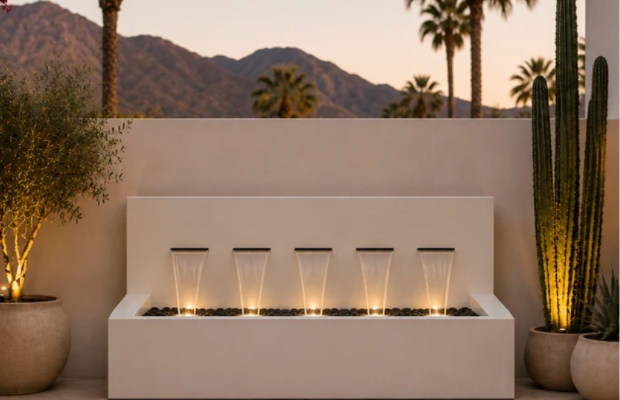
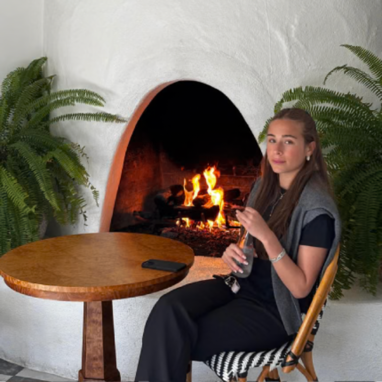
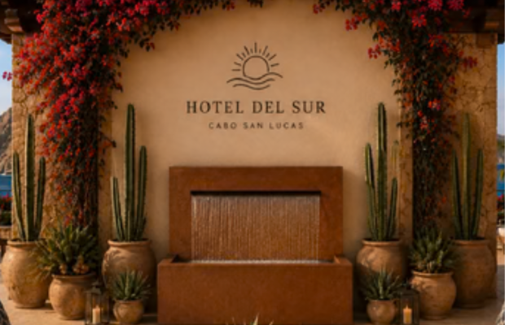
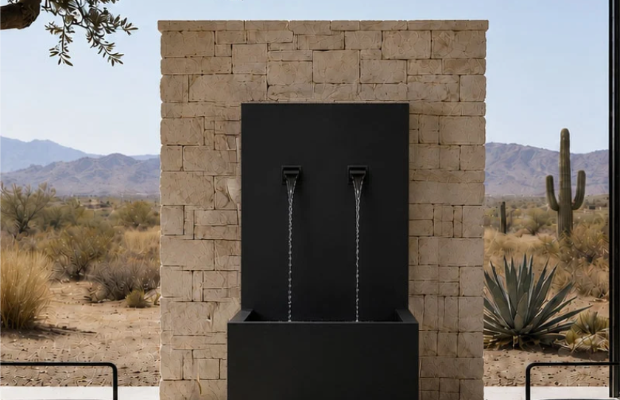
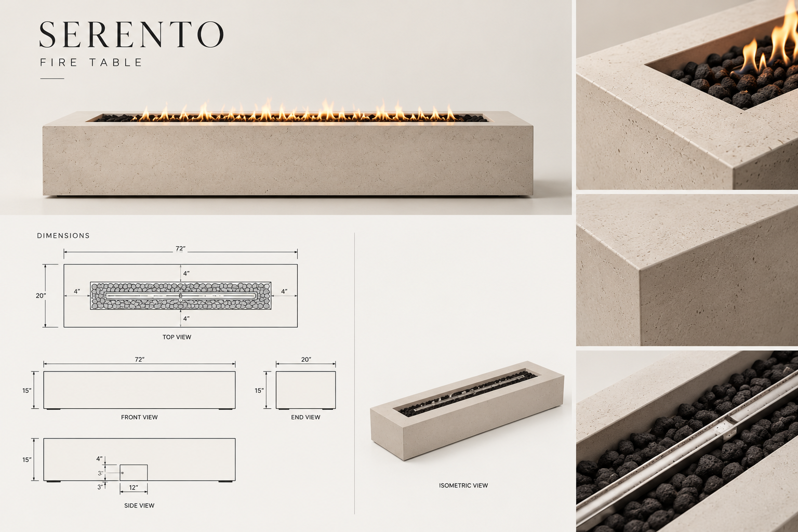

I co-founded Valyrian Designs with my dad in 2023. We design and sell custom architectural fountains, water features, and fire features.
My work covers customer conversations, product development, pricing, and working with manufacturers, including international suppliers, to turn designs into products we can sell. That means understanding what a customer wants and what they can spend, helping shape a design's look, dimensions, and feasibility, and working out costs, margins, and shipping.
When I started, I watched how much detail went into a single product. I loved getting to the final result: designing, iterating, and figuring out how to make a piece that would light up a space and still be practical enough for people to afford and enjoy.
What I balance on every product
Customer vision
What the customer wants the piece to do for their space, and what they can spend.
Design
The look, dimensions, and finish, shaped with the customer.
Pricing & margins
Working out costs and margins so the price stays practical.
Manufacturing
Whether manufacturers, including international suppliers, can produce it as designed.
Delivery
Packaging and shipping a piece so it arrives ready to install.
What we make
Three launched wall fountains, and a fire table still in development.



Serento fire table
A new fire table we’re developing as we prepare for launch. It hasn’t shipped yet.
- Opportunity
- Customers kept asking about fire products, and a fire table was a natural way to expand what we already offer.
- Product definition
- A long, low rectangular table: 72″ × 20″ × 15″, with a linear burner set in a lava-rock channel 4″ in from each edge, and a 12″ access panel on the side.
- Trade-offs
- Balancing a clean, minimal look against manufacturing feasibility, material choice, price and target margin, and the cost of packaging and shipping a piece this size.
- My contribution
- I’ve helped evaluate customer interest, design direction, dimensions and specifications, materials and construction, manufacturing feasibility, pricing and margins, and packaging and shipping.
- Status
- In development, preparing for launch.
~$140KCompany revenue over a single 90-day period. Not profit, not annual, and not tied to any one product.
- Results Revenue above, across the business.
- Launched The Modern Wall Fountain collection.
- In development The Serento fire table.
Working on Valyrian means one week is spent on a customer’s budget, the next on a supplier’s production limits, and the next on how a piece will ship. Most of what I’ve learned about making products came from keeping all of those in view at once.
← Back to selected work